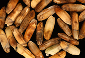

PESTS OF RICE :: Major Pests :: Rice Earhead Bug
5. Rice earhead bug: Leptocorisa acuta (Alydidae: Hemiptera)
Distribution and status: India and rice growing areas |

|
Damaged grains caused by rice bug (IRRI) |
ETL: 5 bugs/100 panicles or 1 bug/hill - flowering stage; 16 bugs/100 panicles or 3 bug/hill- milky stage. |
Management
- Remove alternate host, Echinocloa from bunds and field.
- Ensure synchronous planting on community basis in an area.
- Use neem seed kernel extract 5% or notchi leaf powder extract 5% or Ipomoea leaf powder extract 5% or
Prosopis leaf powder extract 5%. - Dust quinalphos 1.5 D or carbaryl 10 D or malathion 5 D @ 25 kg/ha or spray
malathion 50 EC 500 ml or monocrotophos 36 WSC 500 ml/ha.